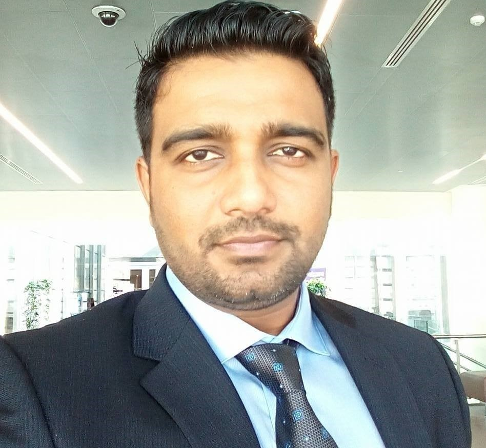

EECS 2017 Symposium
Welcome to the Eighth Joint Research Students Symposium of the Departments of CDS, CSA, ECE, EE, and ESE at the Indian Institute of Science!
EECS-2017 primarily is a forum for presentations by senior research students (expecting to graduate in 2017) involving the Departments of Computational and Data Sciences (CDS), Computer Science and Automation (CSA), Electrical Communication Engineering (ECE), Electrical Engineering (EE), and Electronic Systems Engineering (ESE).Keynote Speakers and Special Invitees

|
M. Annadurai
Director, ISRO Satellite Centre (ISAC), Bangalore. Future Satellites and Technologies Friday : 10:15 - 11:00 |
|
P. Anandan
Vice President for Research, Adobe How Data Science, Machine Learning, and AI are Transforming the Consumer Experience Saturday : 10:35 - 11:20 |

|
Venkat Padmanabhan
Principal Researcher, Microsoft Research India, Bangalore. Pondering Hard Questions through Vignettes on Research Friday : 11:30 - 12:15 |

|
Vinay Kulkarni
Chief Scientist and Head of Software Systems Research, Tata Consultancy Services, Pune, India Toward a compliant, adaptive, and model driven digital enterprise Friday : 15:45 - 16:30 |
Invited Talks

|
P Vijay Kumar
Department of Electrical Communication Engineering, IISc. A Beginning-Researcher's Guide to the Galaxy Friday : 17:00 - 18:00 |
|
Naganand Doraswamy
Managing Director & Founder, Ideaspring Capital. A case for more start-ups from IISc Saturday : 17:30 - 18:00 |

|
Sivaram Ambikasaran
Department of Computational and Data Sciences, IISc. Fast algorithms for computational sciences. Friday : 09:50 - 10:10 |

|
Siddharth Barman
Department of Computer Science and Automation, IISc. Finding Equilibrium Saturday : 11:45 - 12:05 |

|
Kausik Majumdar
Department of Electrical Communication Engineering, IISc. Externally Controlling Electronic Structure In Two Dimensional Monolayers Friday : 14:30 - 14:50 |

|
Prasanta Kumar Ghosh
Department of Electrical Engineering, IISc. Smart Photoplethysmogram For Cuff-less Blood Pressure Measurement Friday : 18:00 - 18:20 |
|  |
Hardik J. Pandya
Department of Electronic Systems Engineering, IISc. Towards a Portable Multi-Parameter Cancer Diagnostic Device Saturday : 12:05 - 12:25 |